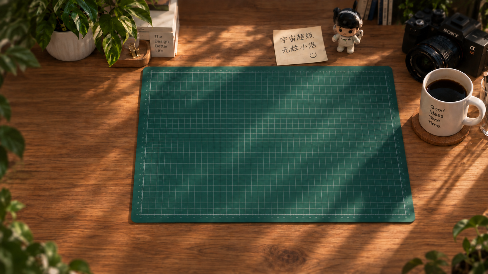

SoYii
产品体验 / 电商与任务平台任务接取与进度页、分享交互、运营活动及官网视觉设计。

你好，我是
关注产品体验
与视觉表达的设计师。
视觉传达专业大四学生，希望从事 UI / UX 设计。关注需求梳理、交互逻辑与视觉细节，正在借助 AI 探索从高保真原型到前端实现的完整流程。
设计之外 / 街舞 · 吉他
在动作与音乐中，感受节奏与表达。
以视觉表达为基础，持续探索产品体验与交互设计。
使用 Figma 构建高保真界面与原型，借助 AI 进行视觉探索、动效迭代与前端落地练习。
任务接取与进度页、分享交互、运营活动及官网视觉设计。
完成高保真页面、IP 形象与交互原型，探索小程序落地流程。
设计桌面端与移动端下载页，优化安卓下载引导与多语言视觉。
ABOUT THE DESIGNER
我叫小浩，是一名视觉传达专业的大四学生。最初吸引我的是画面的构图、色彩和字体；现在，我也关心界面出现之前的问题：用户来到这里想完成什么？哪些信息应该先被看见？下一步是否足够清楚？
在 UI 与交互设计的实践里，我开始把视觉放回具体的使用场景。一个按钮的位置、一段任务说明的顺序、一张卡片如何呈现进度，都会影响用户是否理解、是否愿意继续。
我希望自己的作品既有鲜明的视觉表达，也经得起实际使用。于是我不断回到需求、原型和反馈中，调整那些看似微小，却会影响体验的细节。
梳理需求、信息结构与操作路径，让用户知道自己在哪里、需要做什么，以及完成后会发生什么。
从界面布局到运营活动，用字体、色彩、图像与节奏建立重点，让表现形式服务于内容。
以 Figma 高保真原型为起点，借助 AI 尝试前端实现与动效迭代，理解设计与开发之间的衔接。
我学过舞蹈和吉他，也喜欢尝试新鲜的表达方式。动作的停顿、音乐的轻重，让我对“什么时候出现，什么时候留白”格外感兴趣。
这些兴趣也进入了我的设计练习：关注转场如何连接内容，关注交互反馈的节奏，寻找视觉与体验之间更自然的关系。